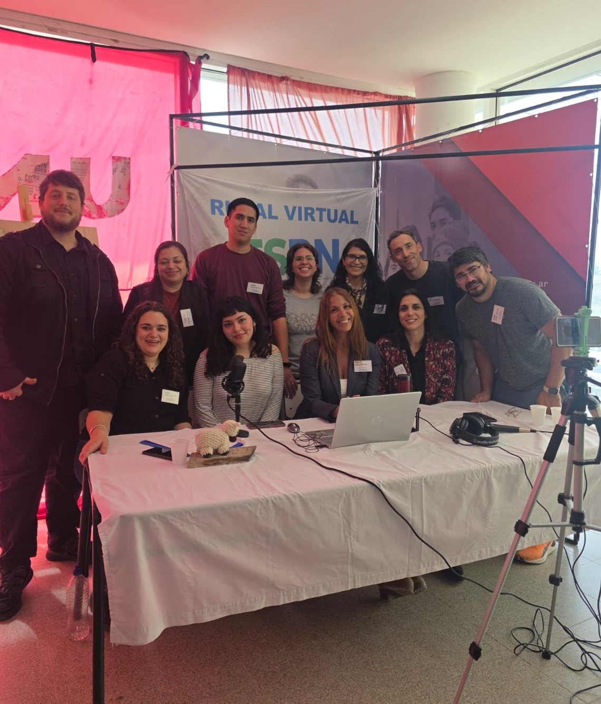
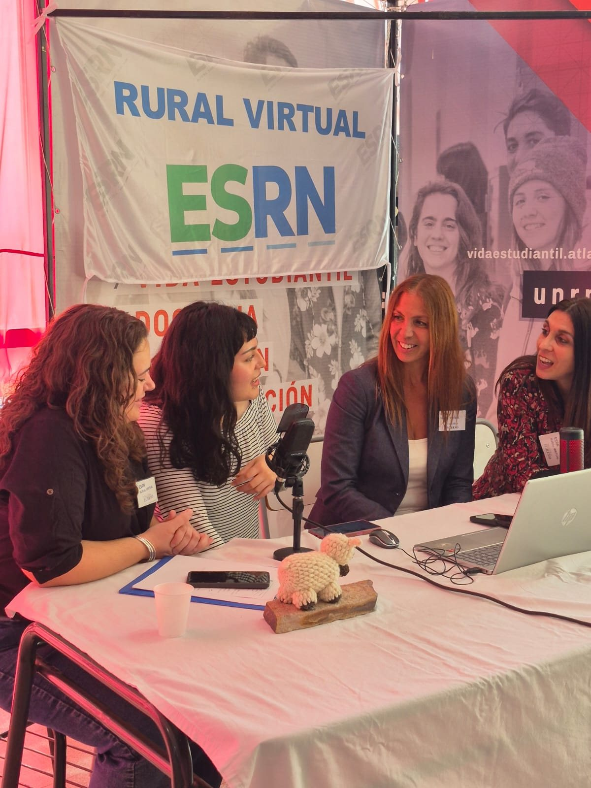
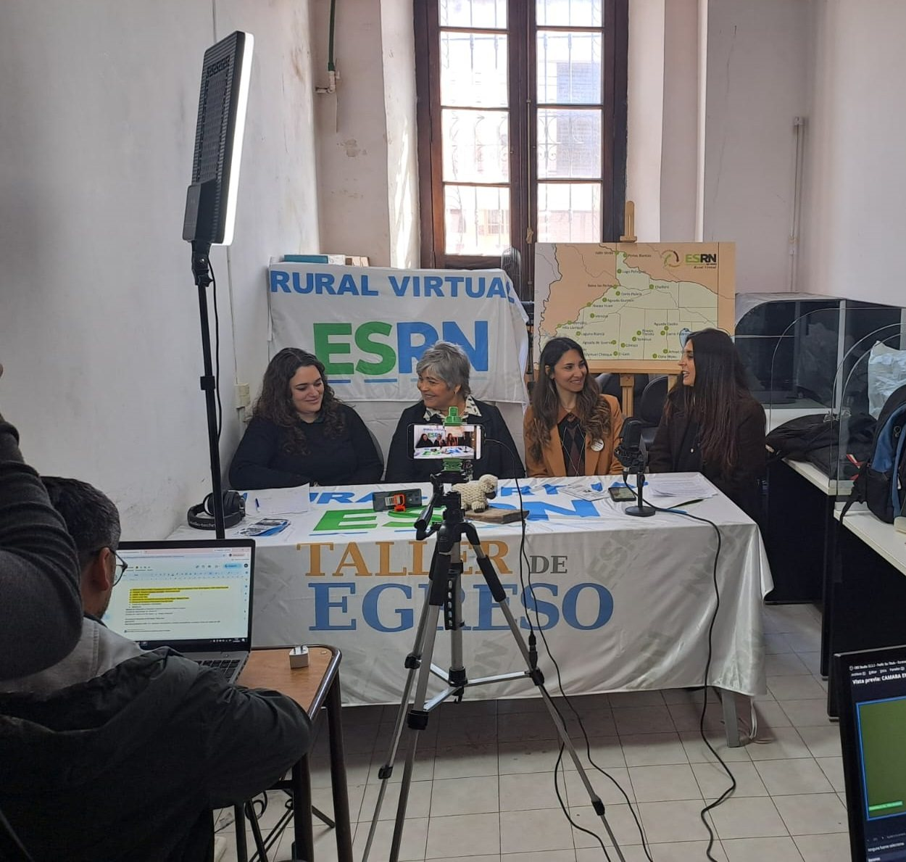
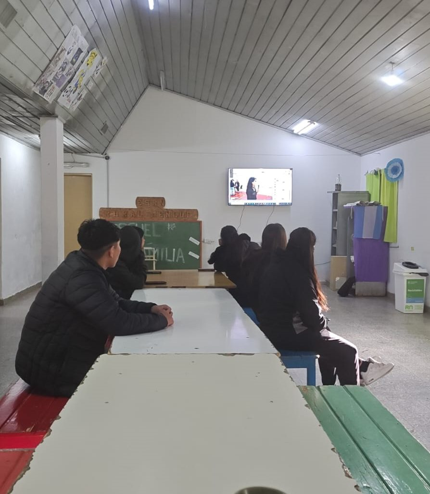

¿Qué se puede estudiar después de la secundaria, dónde y con qué ayudas?
Con esa pregunta como punto de partida llevamos adelante, por segundo año consecutivo, el Taller de egreso. En la ESRN Rural Virtual acompañamos a estudiantes de veintiséis parajes y localidades rurales de Río Negro, entre clases virtuales y encuentros presenciales, y sabemos que vivir lejos de los grandes centros urbanos hace que muchas oportunidades de formación y de trabajo queden fuera de vista. Queríamos que eso cambiara antes de que nuestras y nuestros estudiantes terminaran quinto año.

Lo que no siempre se conoce
En la región hay una enorme variedad de carreras terciarias, universitarias, de formación docente y técnico profesional, además de capacitaciones laborales y oficios. Pero en el interior de la provincia no siempre se conocen. Tampoco se sabe mucho de los programas de bienestar estudiantil que ofrecen las instituciones de educación superior: ayudas para el material de estudio, la vivienda y la alimentación, y becas económicas que muchas veces son las que permiten sostener la carrera hasta el final.
Micrófono abierto
Por eso el taller se armó como una serie de encuentros con podcast, recursos digitales y entrevistas a profesionales, docentes y representantes de instituciones educativas y del sector productivo. Con micrófono, cámara y la bandera de la Rural Virtual de fondo, las preguntas de nuestras y nuestros estudiantes fueron las que marcaron el rumbo de cada charla.
Una de esas voces fue la de Sol Contrera, estudiante de 5.º año de Aguada Cecilio, que se sentó frente al micrófono para contar su experiencia.

También conversamos con Patricia Campos, ministra de Educación y Derechos Humanos de Río Negro, y con Paula Quezada, coordinadora de Innovación e Investigación Educativa de la provincia.

Nuestro stand en la Expo UNRN
El taller también nos llevó a la Expo UNRN, la muestra de carreras de la Universidad Nacional de Río Negro, donde armamos nuestro espacio con la bandera de la ESRN Rural Virtual. Mientras tanto, desde las sedes, las y los estudiantes siguieron los encuentros por pantalla, como en Mencué.

La Radio del Rural registró esa jornada en este video:
EXPO UNRN · ESRN Rural Virtual · La Radio del Rural
Proyectar Futuro: feria educativa
También estuvimos en «Proyectar Futuro», una feria educativa en la que participó la ESRN Rural Virtual. Así lo contó La Radio del Rural:
Proyectar Futuro · Feria educativa · ESRN Rural Virtual · La Radio del Rural
Lo que nos llevamos
Nos quedamos con la sensación de haber abierto puertas. Nuestro deseo es que todo lo que se compartió en el taller sea un recurso para las y los egresados: información concreta para empezar estudios superiores o un camino de formación laboral, y para tomar decisiones conscientes según sus intereses, sus posibilidades reales y su proyecto de vida.